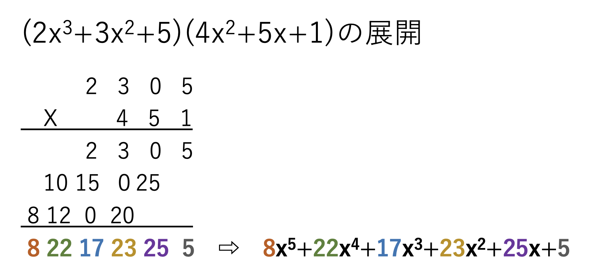
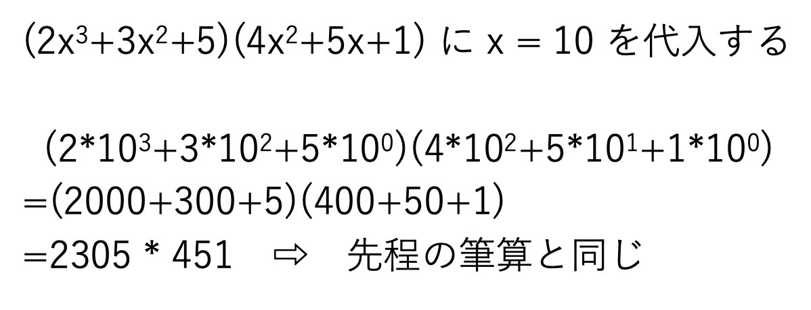
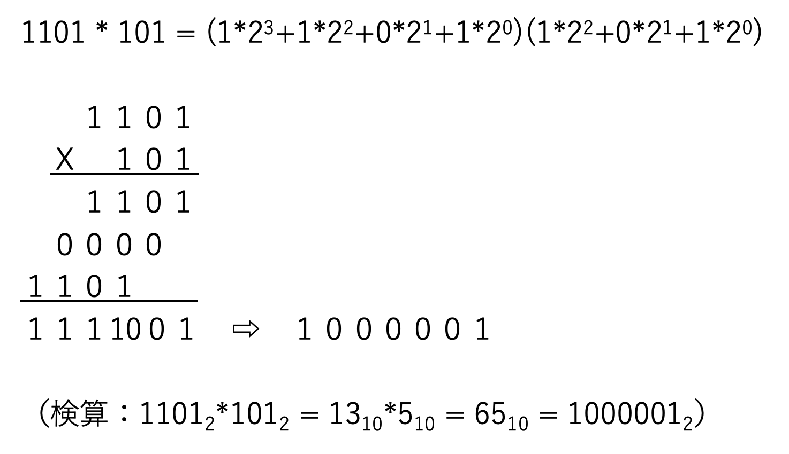

▲
top
top
方程式を楽に展開したい
筆算を使って方程式の展開を簡単に解く

x の累乗の項を分けてそれぞれ計算することと変わらないが、筆算を使う方が計算ミスが少なくて済みそうだ。
なぜこうなるのかと言えば、上の画像の計算で x = 10 ならば普通の掛け算と筆算に変わることを考えればわかる。

筆算は右から順に10^0の項、10^1の項、10^2の項、10^3の項・・・と表記していくのと同様に、x の筆算においても右から順にx^0の項、x^1の項、x^2の項、x^3の項・・・と考えれば良い。
では、なぜ x の筆算では桁あがり(繰り上げ)をしないのか。まずは x = 10 の普通の筆算で考える。
そもそも”桁あがりする”とは、その桁の数字が１０を超えたら１の位だけを残し１０の位は次の桁に足し合わせることである。 次に x の筆算ならばどうなるのか。その桁の数字が x を超えたら１桁目だけを残し２桁目は次の桁に足し合わせることになるが、この時 x は変数であり何の数字なのかは不明なので x を超えたかどうかの判定ができない。
また、桁あがりを計算することの意味は計算結果を見やすくするためであって、桁あがりをやるやらないは結果の正誤に関係しない。このことからも x の筆算で桁あがりを計算しないことのイメージが掴めるであろう。
ここまで普通の筆算、x の筆算と言ってきたものは実は１０進数の筆算と x 進数の筆算である。これを利用すればさまざまな進数の乗算が計算可能になる。たとえば２進数の乗算↓

この計算方法を全ての受験生に伝えにいくために旅に出ます。探さないでください。
にっきのページに戻る